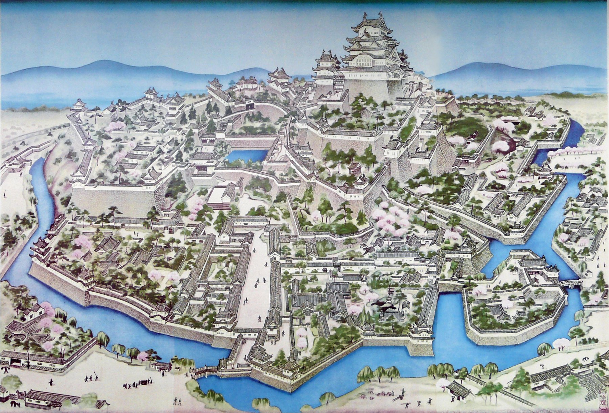
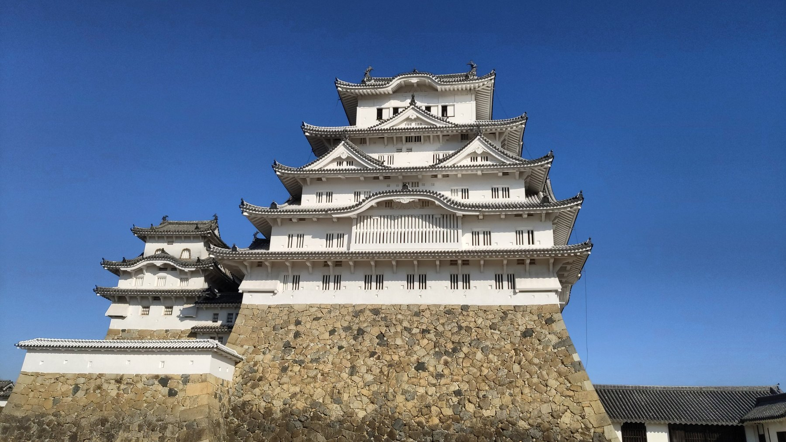
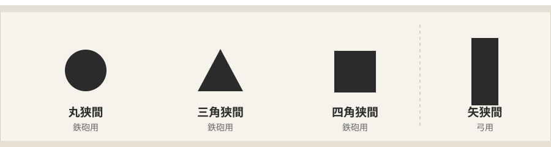
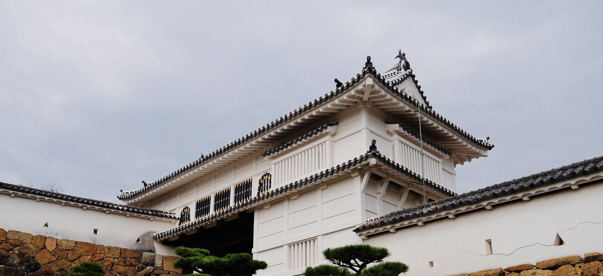
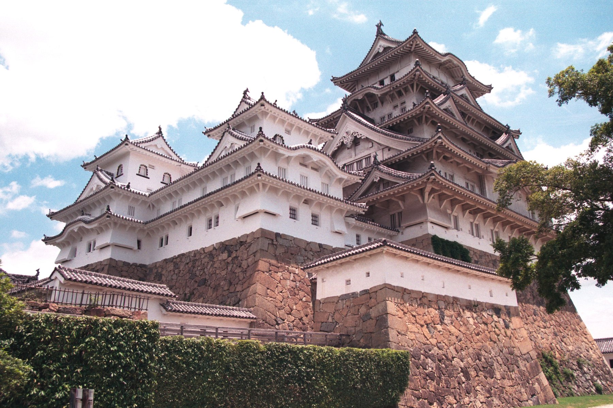
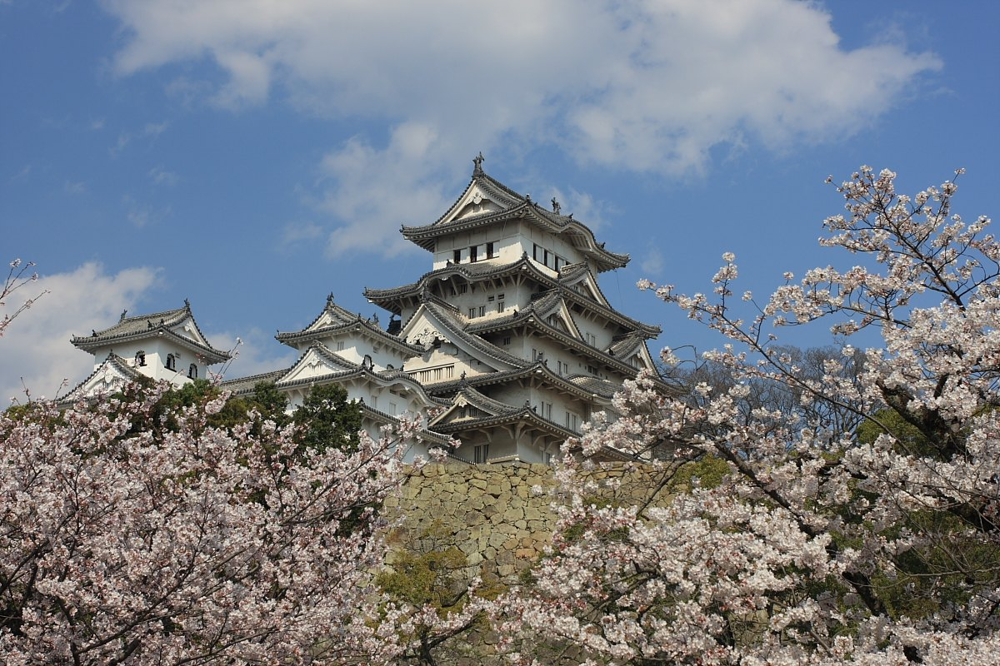
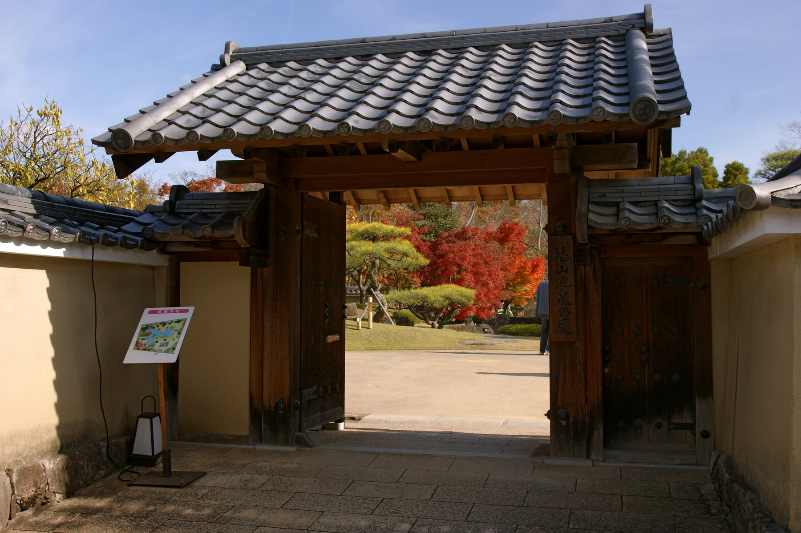
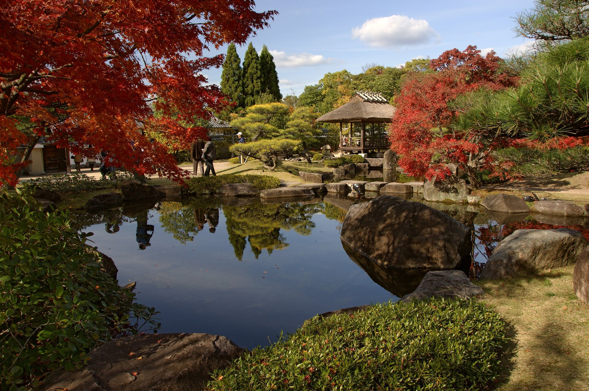

The White Heron Castle — white-plastered, wide-winged,
still standing after four centuries and two brushes with destruction.
A guide to reading Japan’s most complete castle on foot.
The Five National Treasure Castles / Volume One
Before you go
Admission fees, opening hours and access arrangements described in this book are subject to change.
Always check the official website for the latest information before visiting.
Himeji Castle official site: https://www.city.himeji.lg.jp/castle/
Basic Data
At a glance
Name
Himeji Castle (Himeji-jo) — also known as Shirasagi-jo, the White Heron Castle
Location
68 Honmachi, Himeji, Hyogo Prefecture
Type
Architecture — castle and keep
National Treasure
Designated 1931 under the old system; re-designated 1951
World Heritage
Inscribed December 1993 — among Japan’s first UNESCO World Heritage Sites
The keep
Main keep of five roofs and six floors over a basement, plus three smaller keeps, linked into a connected complex
Present form
Completed around 1609 in the great rebuilding by Ikeda Terumasa
How this book is arranged
Chapter 1 — History: three lords and two brushes with destruction
Chapter 2 — Reading the architecture: why the White Heron is both beautiful and strong
Chapter 3 — Walking the castle: a route guide
Chapter 4 — Visiting: hours, access, seasons and the neighbourhood
Written to work either way round — read it before you go, or read it again after you
have been. Once you know what the walls and stones were for, the same stone base and the same white
plaster look completely different.
Japan’s National Treasures / Himeji Castle2
Chapter 1
History — three lords, two brushes with destruction
From fort to great castle
Himeji Castle traces its origin to 1333, when Akamatsu, a warrior of Harima province,
is said to have raised a fort on this hill. Over the centuries that followed, forty-eight lords from
thirteen families held the site in turn. It commanded the approaches to western Japan, and whoever
held it held a piece of the country’s balance of power.
Three lords in particular gave the castle the shape we see today.
Hashiba (Toyotomi) Hideyoshi — built a three-storey keep here as a base
for his western campaigns
Ikeda Terumasa — took the castle after the Battle of Sekigahara and spent
roughly eight years from 1601 rebuilding it into the present main keep of five roofs and six floors
Honda Tadamasa — arrived in 1617 and laid out the third bailey and the
western bailey, completing the castle as it now stands
Princess Sen
Honda Tadamasa had a reason for building the western bailey: it was for Princess Sen,
who had married his eldest son Tadatoki. A granddaughter of Tokugawa Ieyasu, she had lost her first
husband, Toyotomi Hideyori, at the fall of Osaka Castle, and came here to live after remarrying.
The Cosmetic Tower and the Long Corridor that survive in the western bailey still carry something of
her daily life — a reminder that a castle was not only a machine for war.

Himeji Castle painted from above in the early Meiji period. Beyond the keep and its towers
you can see the rings of moats, the mansions of the third bailey, the samurai quarters of the town,
cherry trees and people going about their day. What is open to visitors today is only a part of
what this painting shows.
Chapter 1 — History3
First threat: the Meiji abolition of castles
With the return of the domains to the emperor in 1869, Himeji Castle became state property.
It passed to the army as a military installation, and in 1872 the government decided which of the
country’s castles would be kept and which demolished. Himeji was marked for preservation —
but the upkeep was ruinous and the fabric was decaying, and the paperwork for demolition
began to move all the same.
What saved it was an army officer who urged its preservation on the occasion of an imperial
progress. The removal, all but decided, was suspended, and the castle survived.
A note — the castle sold for a song
A story is often told that in these years Himeji Castle went to auction and was knocked down for
an astonishingly small sum. Accounts of the figure differ — the famous one is 23 yen 50 sen —
and it is said that the buyer never demolished it because disposing of the roof tiles alone would
have cost more than the castle was worth. Whether or not the details are true, the story captures
how thoroughly castles had come to be seen as useless relics.
Second threat: the war
In 1945 Himeji was bombed twice — on 22 June, and again through the night of 3 July into the
early hours of the 4th. The city centre burned to the ground and more than five hundred people were killed.
And yet — the castle did not burn. An incendiary that fell on the keep failed
to detonate; the castle had been draped in black netting; explanations are offered, but no one has
settled the matter. For people who had lost everything, the sight of the castle standing white and
whole above the ashes became something to hold on to.
Rebuilt to survive — two great restorations
In the Showa restoration, begun in 1956, the keep was dismantled
completely, its timbers repaired and the whole reassembled — an undertaking without
precedent. Of the two great pillars running from the basement to the top floor, the eastern one had
leaned out of true by 37 centimetres, and the western one had rotted through to the core and had to be
replaced with new timber. The keep alone cost some 530 million yen.
The Heisei restoration, from June 2009 to March 2015, renewed the white plaster,
replaced the roof tiles and strengthened the structure against earthquakes, at a cost of about
2.8 billion yen. For a while afterwards people joked that the castle had come back too white.
Himeji has not simply stood for four hundred years. It stands because each generation has
taken it apart and put it back together. That is the castle’s other story.
Chapter 1 — History4
Chapter 2
Reading the architecture
On the left, the western and northwestern smaller keeps with their connecting corridors;
on the right, the main keep. Linked all the way round, they enclose a courtyard between them.
Early morning in summer.
The connected keep
Himeji’s defining feature is its connected keep: a main keep with three
smaller keeps joined to it by roofed corridors, forming a closed ring. The ring encloses a courtyard,
and an attacker who broke in would find himself trapped there, exposed on every side.
Beauty and defence solved in a single move — this is why the design is regarded
as the high point of Japanese castle architecture.
Plastered white, inside and out
Not only the walls but the eaves and even the joints between roof tiles are sealed with white
lime plaster. This is the whiteness that earned the castle its heron’s name — and it is not
only for looks. The plaster is fireproofing. When the castle emerged from its recent
restoration looking startlingly bright, it was because that coating had just been renewed.

Rough stone below, smooth white plaster above. The contrast of the two materials is what
makes the castle read as powerful and graceful at the same time.
Chapter 2 — Architecture5
A path built as a maze
The route from the main gate to the keep bends and doubles back on purpose. Every gate turns you a
different way; nothing runs straight. The point was to break an attack’s momentum, buy time, and
keep the attackers under fire from above. Walk it imagining yourself on the attacking side and the
design starts to make sense.
The catch is that you cannot see any of this while you are inside it. From the
ground you cannot tell which way you are facing or where in the castle you are. Look again at the
painting on the previous page: the moats ring the hill, the baileys fold back on one another, and the
path climbs by turns to the keep. Seen from above, the maze is obvious.
Defences worth looking for

Types of loophole. Round, triangular and square openings were for guns; the tall
rectangle was for bows. (Original diagram)
Loopholes are the small openings cut through the walls for guns and bows.
Round, triangular and square ones were for firearms; the tall rectangular ones were for archers,
who needed vertical room to draw a bow. 997 loopholes survive in the inner
enclosures of Himeji — 844 for guns and 153 for bows. Look up at the walls and you will start
to notice the difference in shape.
Stone drops are openings in the floor of sections that jut out from the wall,
through which stones or boiling water could be dropped straight down onto anyone climbing the base.
The stonework repays attention too. The method changes from era to era —
from rough natural stones stacked as found, to blocks dressed to fit without a gap. You can read the
progress of the craft within a single castle.
Chapter 2 — Architecture6
Chapter 3
Walking the castle
Main Gate — enter here
Third Bailey lawn — the classic head-on view of the keep
Diamond Gate — a tower gate with Momoyama-period ornament
The I Gate and the Ro Gate — climbing through the turns
Bizenmaru — the keep seen from directly below
The main keep — basement to top floor
The western bailey — Long Corridor and Cosmetic Tower
Plan
Time
What you see
Quick
1–1.5 hours
The main keep and the essentials
Standard
About 2 hours
Main keep plus the western bailey
Unhurried
3–4 hours
Gates, towers and stonework, and the garden next door
Before you set off
In peak season there can be a wait to enter the keep. During cherry-blossom season and public
holidays, arriving right at opening time is the way to avoid it. The stairs inside the keep are
steep, so wear shoes you can climb in and carry a bag that leaves both hands free.
Chapter 3 — Walking the castle7
Along the way

The Diamond Gate, the first tower gate you meet after entering. The latticed windows,
black-lacquered and fitted with gilded mounts, preserve the ornamental taste of the Momoyama period.

The keep complex seen from Bizenmaru. This is where the stonework is at its most
imposing — and where the climb you have just made finally explains itself.
Every gate changes what you can see. You turn, you climb, you turn again — and
when the keep finally rises above you at the end of it, the reason this castle was built the way it
was needs no explaining.
Chapter 3 — Walking the castle8
Chapter 4
Visiting
Admission
Open
9:00–17:00 (last admission 16:00)
Admission
1,000 yen for adults; a combined ticket with Koko-en garden is available
Access inside
Open year-round; the interior of the keep can be visited
Official site
https://www.city.himeji.lg.jp/castle/
Fees and hours change. Please check the official website before you travel.
Getting there
Nearest station
JR Himeji Station, or Sanyo-Himeji Station on the Sanyo Electric Railway
On foot
About 20 minutes straight up Otemae-dori from the station’s north exit —
the castle is visible ahead of you the whole way
By bus
Shinki Bus from the north exit to Otemon-mae, then about 5 minutes on foot
By car
Municipal car parks nearby (paid)
By Shinkansen
JR Himeji Station is served directly
The castle through the year
Spring
Cherry blossom. The grounds and the western bailey are among the finest
viewing spots anywhere — white walls against pink
Summer
Deep green against white plaster; the castle changes colour as the light goes
Autumn
Maples in Koko-en, with the keep rising beyond the garden
Winter
Clear air and a hard-edged silhouette. Snow on the roofs is rare and worth seeing

The main keep beyond cherry blossom in full bloom. In spring the castle grounds become one
of the region’s great flower-viewing places.
Chapter 4 — Visiting9
Next door — Koko-en
Laid out on the site of the lord’s western residence, Koko-en is a stroll garden built around
ponds, divided into nine gardens each with its own character, with a tea house and a restaurant.
A combined ticket with the castle makes it the natural second stop. The white walls of Himeji borrowed
as a backdrop are a favourite with photographers.

The gate to the Garden of the Flowering Trees. Its tiled roof frames the garden
beyond like a picture.

Maples and a thatched pavilion reflected in the pond. In autumn the garden holds a
quiet quite unlike the castle’s.
Local food
Himeji oden — eaten the local way, dipped in ginger soy sauce,
which cuts through the light Kansai broth beautifully
Conger eel — the Harima Sea is prime conger ground, and the large
densuke anago is a Himeji speciality
Souvenirs — the station building carries rolled conger, packaged Himeji oden
and local confectionery
Where to photograph
Third Bailey lawn — the whole keep head-on; the classic shot
Bizenmaru — looking up, with the full weight of the stonework in frame
From Koko-en — white walls seen over the green of the garden
The moat and the town — blossom, autumn colour and evening illumination
each change the picture completely
For a second visit
The Long Corridor in the western bailey, the loopholes, the stone drops — the features this
book could only describe in words and diagrams are all things you can photograph yourself inside the
castle. Next time, go and take your own.
Chapter 4 — Visiting10
Colophon
Credits and notes
Image credits
The photographs and illustrations in this book are used under public domain
dedications, CC0, or Creative Commons Attribution licences. Copyright in each photograph remains
with its photographer or rights holder.
The keep from the third bailey (cover) — Drive Photographer, CC0, via Wikimedia Commons
The keep from below, clear sky — CC0, via Wikimedia Commons
The connected keep — Public domain, via Wikimedia Commons
The keep from Bizenmaru — Mat, Public domain, via Wikimedia Commons
The Diamond Gate — Zairon, CC BY 4.0, via Wikimedia Commons (cropped)
Koko-en, autumn colour — 663highland, CC BY 2.5, via Wikimedia Commons
Koko-en, garden gate — 663highland, CC BY 2.5, via Wikimedia Commons
Cherry blossom and the keep — Jason Hsu, Public domain, via Wikimedia Commons
Himeji Castle in the early Meiji period (painting) — Public domain, via Wikimedia Commons
Diagram, “Types of loophole” — original to this book
CC BY 4.0: https://creativecommons.org/licenses/by/4.0/
CC BY 2.5: https://creativecommons.org/licenses/by/2.5/
About the information in this book
Admission fees, opening hours and access arrangements are subject to change.
Always check the official website of each site before visiting. The information here reflects the
time of writing, and no guarantee is made as to its accuracy or completeness.
Terms of use
This book is licensed for the personal use of the purchaser.
Redistribution, reproduction and commercial use are not permitted.
Copyright in the photographs remains with their respective photographers and rights holders.
Principal sources
Himeji Castle official site (City of Himeji) — https://www.city.himeji.lg.jp/castle/
Cultural Heritage Online (Agency for Cultural Affairs) — https://online.bunka.go.jp/
Koko-en (Himeji City Machizukuri Promotion Organization)
Japan’s National Treasures — Himeji Castle
The Five National Treasure Castles, Volume One
Only five castle keeps in Japan are designated National Treasures:
Himeji, Matsumoto, Inuyama, Hikone and Matsue. This series visits each of them in turn.